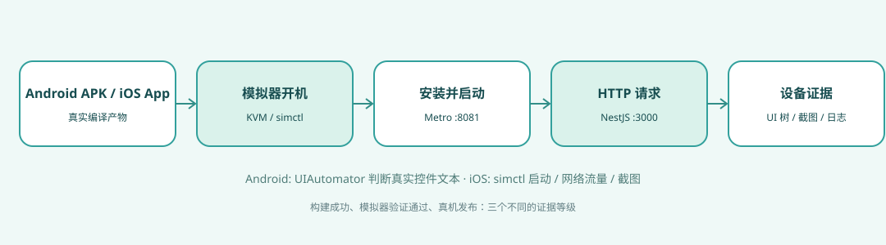
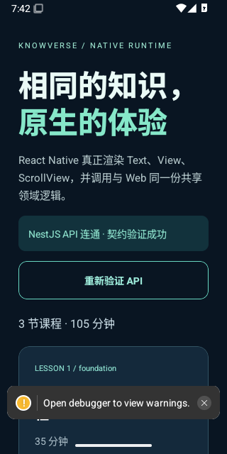
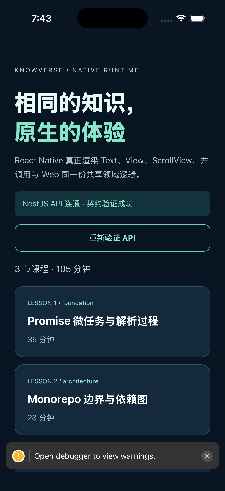

01 · Android 实机控件树
使用 Android API 35 模拟器运行 SDK 37 编译的 Debug APK。通过 ADB reverse 连接 Metro 和 NestJS；UIAutomator 必须检查到真实渲染的欢迎文本与 API 成功状态，然后点击“重新验证 API”，并核对第二次真实网络请求。
Android CI 与证据包 →TypeScript 通过、APK/.app 编译通过都不等于用户看到了页面。本实验在 GitHub Actions 中启动 Android / iPhone 模拟器，加载 Expo 调试包、访问 NestJS，再保存可复核的证据。

flowchart LR
Build["Android APK / iOS .app"] --> Boot["模拟器开机"]
Boot --> Install["安装与启动"]
Metro["Metro :8081"] --> Install
Install --> Proxy["HTTP :3001"]
Proxy --> Nest["NestJS :3000"]
Proxy --> Gate{ "有效课程 JSON?" }
Gate -->|Android| UI["UIAutomator 文本"]
Gate -->|iOS| Shot["simctl 截图"]
UI --> Evidence["截图 + 日志 + UI XML"]
Shot --> Evidence
使用 Android API 35 模拟器运行 SDK 37 编译的 Debug APK。通过 ADB reverse 连接 Metro 和 NestJS；UIAutomator 必须检查到真实渲染的欢迎文本与 API 成功状态，然后点击“重新验证 API”，并核对第二次真实网络请求。
Android CI 与证据包 →从 Xcode 编译得到的无签名 .app 安装到 iPhone Simulator，通过 simctl 启动并观察实际 HTTP 请求。保留设备截图，不将其误称为 XCTest UI 测试。
iOS CI 与证据包 →由 api-proxy.mjs 检查客户端实际请求的 JSON 契约；android.sh、ios.sh 保存失败现场与日志，所有脚本随项目源码一起提供。
截图来自 GitHub Actions 的 Debug 构建，均可看到真实课程 UI 和 NestJS 接口成功状态；底部可能出现调试构建专用的 warning 提示。截图仅作为可复核的运行证据。

